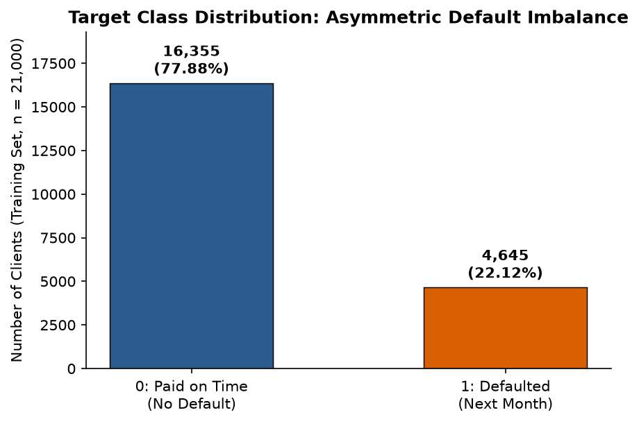
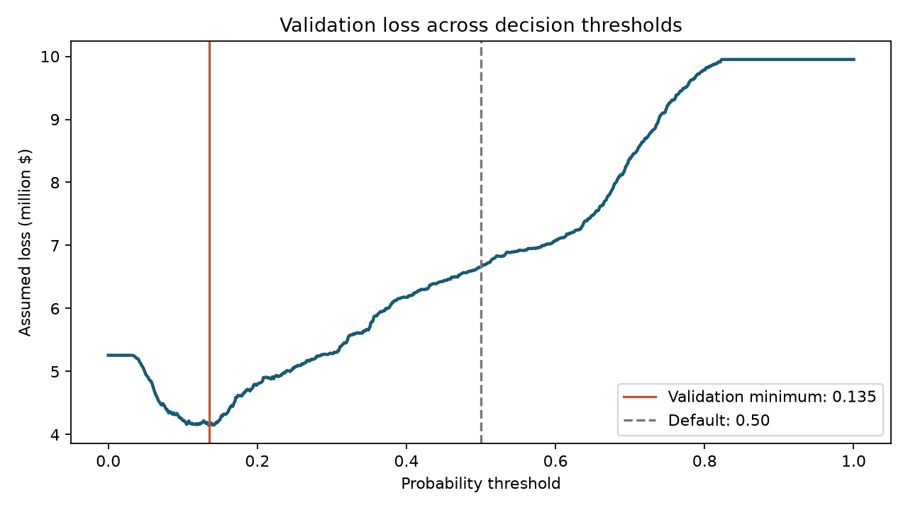

Question
Can payment history and account information estimate the probability that an existing client defaults next month? If missing a default is more costly than a false alarm, what threshold gives the lowest assumed loss?
One row is one client account observed after the September 2005 billing history. The target is default payment in the following month (1 = default). The model uses only demographics, credit limit, and billing and repayment information available at that point. It does not establish why a client defaulted.
Data
The public UCI Default of Credit Card Clients dataset contains 30,000 Taiwan credit-card clients, 23 predictors, and one binary target. About 22.12% defaulted. Important variables include credit limit, age, six repayment statuses, six bill amounts, and six payment amounts.


The source has no missing cells. Undocumented education codes 0, 5, and 6 are grouped as “other”; marriage code 0 is grouped likewise. Negative bill balances occur and are retained. The original file labels the newest repayment status PAY_0; our processed splits call it PAY_1.

Preprocessing
We remove the row ID, regroup undocumented categories, and create utilization, payment-to-bill, maximum delinquency, delayed-month count, and debt-trend features. Ratios use guarded denominators; payment-to-bill ratios are capped at 5. Numeric inputs are standardized and categorical inputs one-hot encoded.
The splitter creates stratified 70% training (21,000), 15% validation (4,500), and 15% test (4,500) sets with seed 42. Feature engineering and learned scaling and encoding live inside each model pipeline; cross-validation fits them on each training fold only.
Baseline & methods
A majority-class Dummy model shows what “always predict no default” achieves. L2 and L1 logistic regression provide interpretable probability baselines; L2 stabilizes correlated features and L1 can set coefficients to zero. An RBF SVM tests a nonlinear boundary. Random Forest averages many trees, while histogram gradient boosting builds trees sequentially to correct earlier errors.
Ridge and Lasso regularization and both ensemble grids were selected by five-fold stratified training cross-validation using average precision. The SVM in this handoff uses fixed settings. All reported financial comparisons use the same validation labels and cost assumptions.
Evaluation
Average precision (summarized here as PR-AUC) rewards useful ranking among the minority default class. ROC-AUC measures ranking over both classes. Brier score measures the quality of probability estimates. A decision is counted as “flag” when predicted default probability is at least the threshold.
The costs are illustrative dollars per error, not losses measured in the UCI data. Their theoretical threshold is 1,500 / (10,000 + 1,500) ≈ 0.1304 when probabilities are calibrated and the simplified costs apply. We selected model and threshold on validation only, then evaluated the held-out test split once.
Results
HistGradientBoosting had the lowest validation loss at the theoretical threshold. A validation sweep selected 0.135 for the final decision rule. On the 4,500 test clients, PR-AUC was 0.5596, ROC-AUC 0.7798, and Brier score 0.1348.
At 0.135, the model missed 171 actual defaults and falsely flagged 1,686 non-defaults. The lower threshold catches more defaults at the cost of more false alarms.

Explore the cost trade-off
Move the threshold or change the assumed costs. Counts come from the final model’s held-out test predictions. This is an exploration of fixed predictions; changing controls does not retrain or select a model.
—
—
| Actually defaulted | Did not default | |
|---|---|---|
| Flagged | — | — |
| Not flagged | — | — |
“Savings” compares your chosen threshold with 0.50 using the same costs. The minimum of this test-set curve is descriptive and was not used to choose the reported model or study threshold.
Errors
At the selected threshold, 171 defaults were missed: these clients received probabilities below 0.135 despite defaulting. Another 1,686 clients were flagged but did not default. These errors show why a risk score cannot be treated as certainty. Abhishek’s representative borrower-profile analysis will add concrete examples here before submission.
Limitations
The data describe Taiwan credit-card accounts in 2005; behavior, lending rules, and customer populations can change. The dataset does not record actual loan principal lost, interest foregone, recovery amounts, or the consequences of an intervention. Therefore the dollar totals are hypothetical scenario calculations. Features such as sex and marital status raise fairness concerns that require dedicated group checks before real use. This is a retrospective study, not a deployed lending policy.
Conclusion
On this held-out sample, the boosted tree model ranked defaults better than the linear baseline. Under the stated asymmetric costs, threshold 0.135 reduced assumed loss relative to 0.50. The main lesson is to evaluate probability quality and decision costs separately, and to test cost assumptions before applying such a rule elsewhere.
Reproduction
- Download the public UCI
.xlsdataset usingsrc/01_inspect_data.py. - Install packages from
requirements.txtand run scripts from the repository root. - Run
src/02_split_data.py, thensrc/train_baselines.py,src/calibrate_and_optimize.py, andsrc/train_ensembles.py. - Run
src/cost_optimizer.pyfor the validation choice and one-time final test report. - Serve
docs/as a static directory to use the simulator locally.
The saved split files and probability outputs are in data/ and results/. This site uses only predicted probabilities and true labels, without account-level demographics or billing records. Code and data details will also appear in the team README before publication.